A 10-day Brand Sprint for Reflect
A science-backed biofeedback device that helps users gain control over
their relaxation and well being. Through an interactive, multisensory
experience, Reflect leads users to discover their unique relaxation
techniques through a journey of discovery. The engaging interface and a
strong positive feedback loop help users internalize and improve how
they manage their mental states and well being.
Client |
Reflect
, Noga Sapir
Art Direction | Studio Under
Brand Lead Designer | Anastasia Vlasenko
Strategic director
| Ori Luzia
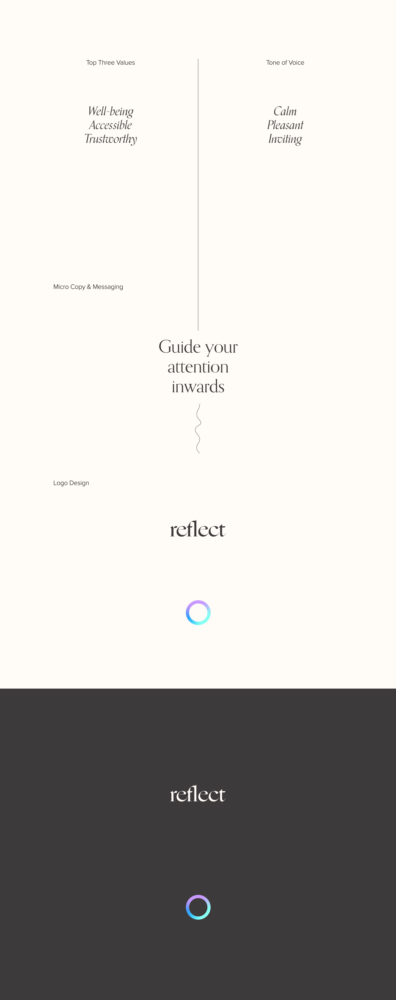

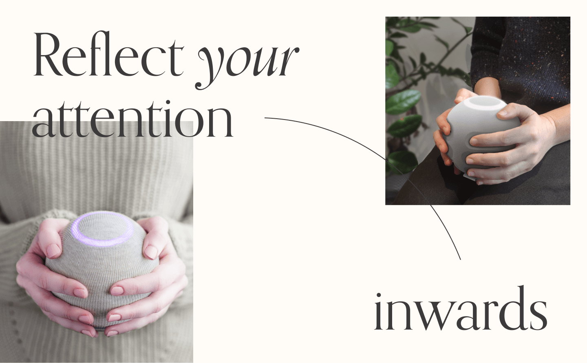

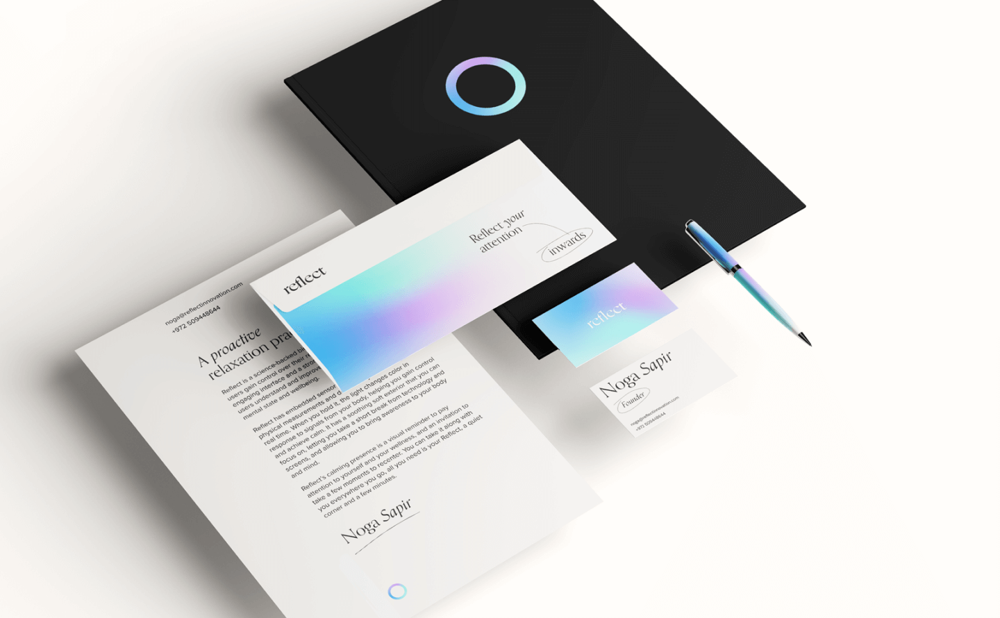
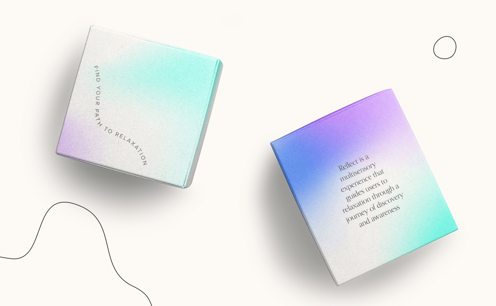
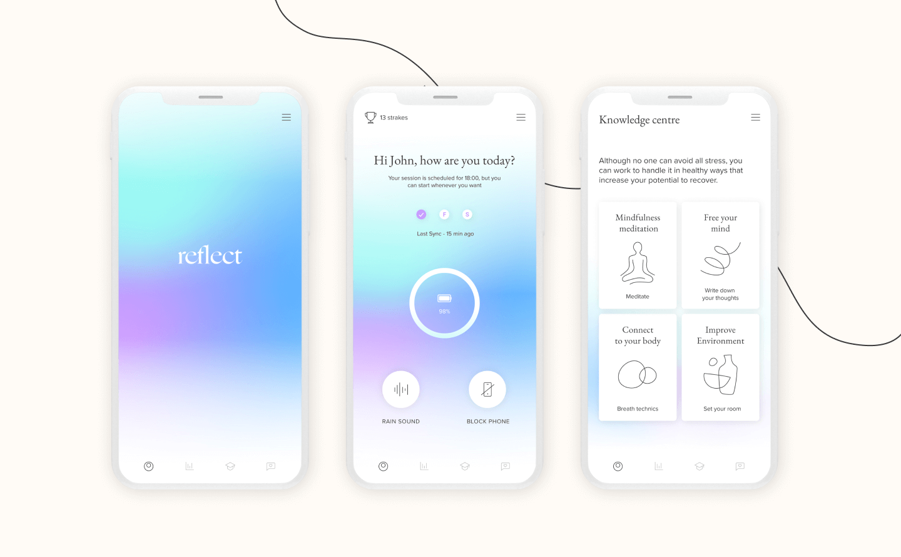

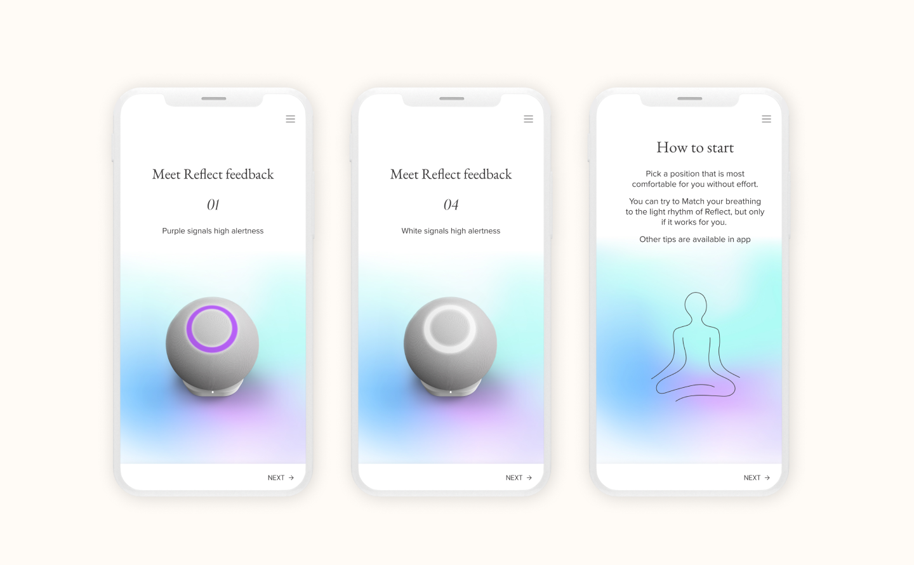
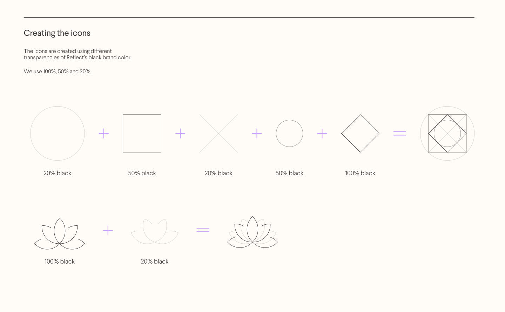

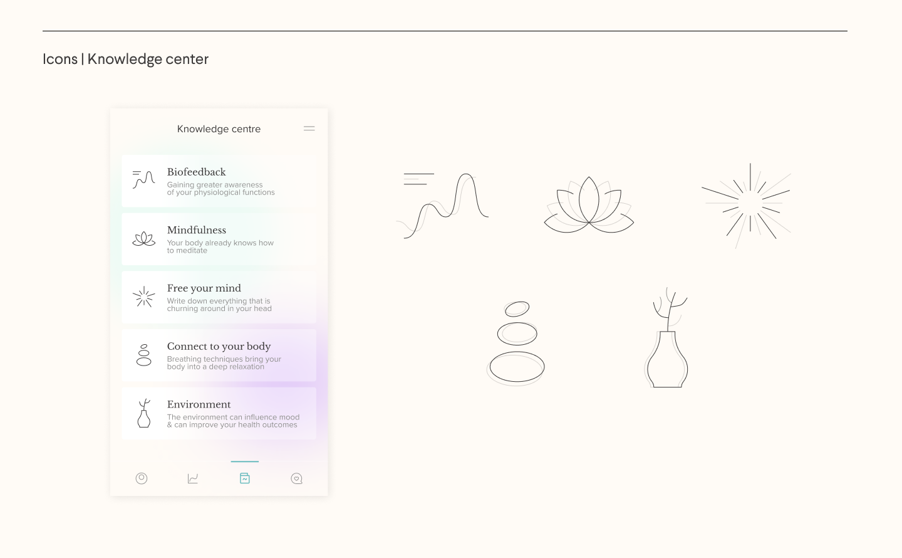
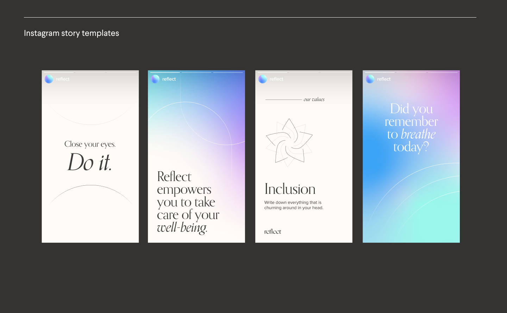

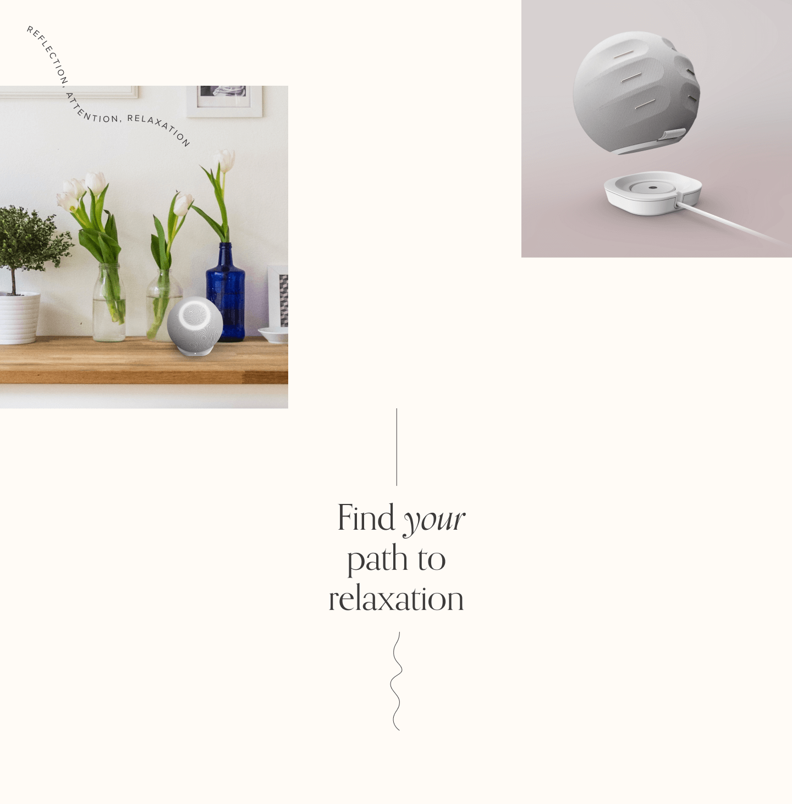

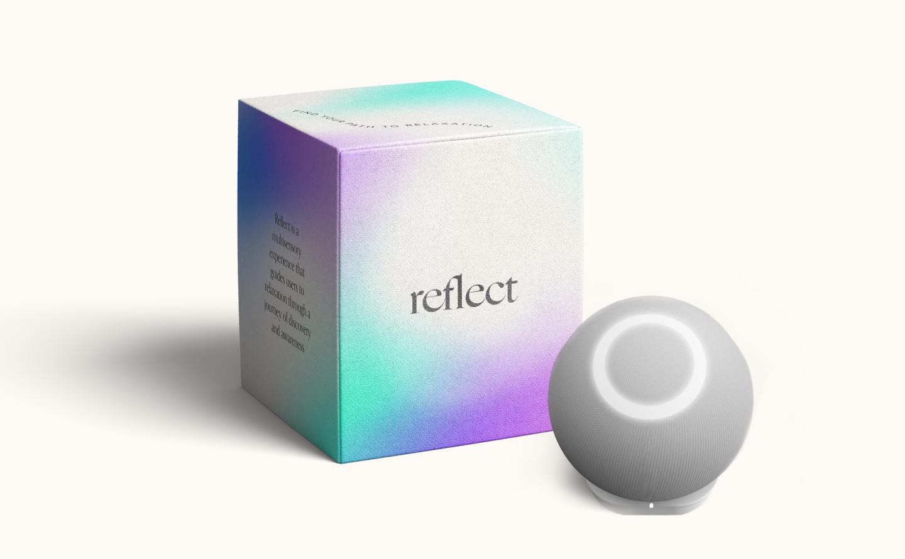